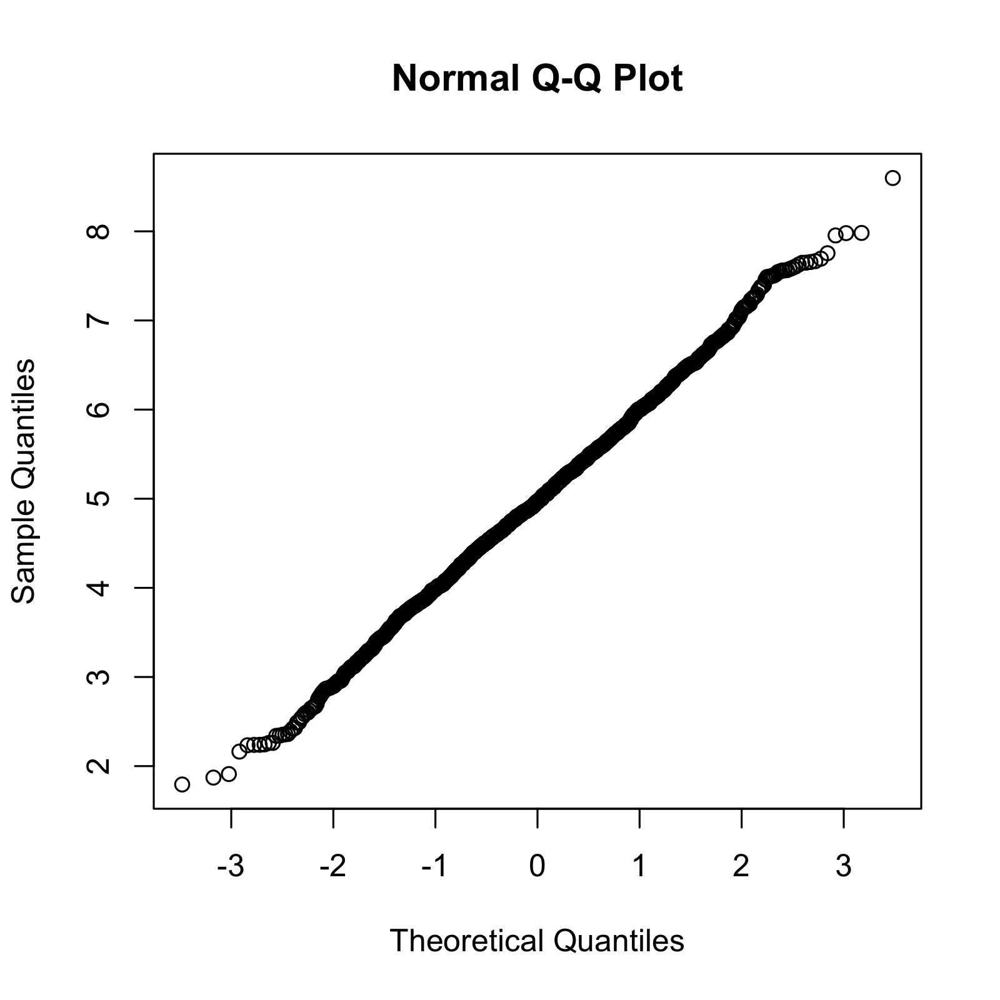

Table of Contents
Before We Begin
The following exercise is to be done in groups of 2. One person from the group will be a raptor and the other will be a shrike. The sections below are clearly labeled as to who will take the lead in that section.
0. Set Up Working Directories
Raptors: On your computer, set up the following folders at an appropriate location:
mkdir -p ~/SOC2020/raptors
ls -l ~/SOC2020
Shrikes: On your computer, set up these folders:
mkdir -p ~/SOC2020/shrikes
ls -l ~/SOC2020
Also remember to share your GitHub account names with each other
1. Raptors Create Central Project Repository
Team raptors will create a repository called collab on GitHub. Make it private.
Create a new folder named collab inside ~/SOC2020/raptors/
Initiate the folder as a new git repository
Add a README.md file to this repository and follow directions for putting content in there
Save and close the README.md and stage changes to the repo
Commit changes
Configure git settings and add remote
Push all new chanes to the existing repo on GitHub
2. Raptors Invite Collaborators
Once your changes have been pushed to GitHub successfully, follow directions for inviting a collaborator. You should have chosen a person from the Shrikes camp to be your collaborator and should have their GitHub user name.
Once a collaborator is added, that person receives a notification from GitHub. After they accept the invitation, they will appear as a collaborator within the project repo.
3. Shrikes Clone the Repository
Now the fun begins. Shrikes will first clone this central repository in which they are a collaborator:
cd ~/SOC2020/shrikes/
git clone https://github.com/YOUR_RAPTOR_COLLABORATOR/collab
Once cloned, the repository contents should be identical for both collaborators.
4. Shrikes Modify the Repository and Push Changes
Shrikes take a look at the files within the repository and decide to make a few changes. For example, let’s imagine and implement these changes:
- Set the seed so the analysis can be repeated precisely at a later date
set.seed(59)
a <- rnorm(100, 5, 1)
- Compare the output of
rnorm to known normal distribution with the qqnorm function.
png("rnorm100_qqnorm.png", units="px", width=1600, height=1600, res=300)
qqnorm(a)
dev.off()
- Push changes made to the repository to the central repo
git status
git add .
git push origin master
- Now the local copies of the repository between Raptors and Shrikes are not identical. This is why every collaborator should sync their local repos frequently from the remote so as to keep up to date. This is exactly what Raptors will do now:
5. Raptors Pull the Repository to Sync Changes
cd ~/SOC2020/raptors/collab/
git pull origin master
- Then check the changes made by Shrikes. After reading through, Raptors agree to the changes, but also think it would be nice to demonstrate the effect of sample size on conformity to the normal distribution. In the above example, the sample consisted of only 100 entries. They decide to try two more iterations.
6. Raptors Modify the Repository and Push Updates
- Run two more iterations of
rnorm()
r500 <- rnorm(500, 5, 1)
r2k <- rnorm(2000, 5, 1)
- And plot both together with the first plot.
png("r500_qqnorm.png", units="px", width=1600, height=1600, res=300)
qqnorm(r500)
dev.off()
png("r2k_qqnorm.png", units="px", width=1600, height=1600, res=300)
qqnorm(r2k)
dev.off()

- Finally, commit and push all changes to the central repository
git status
git add .
git commit -m "Added two qqnorm plots"
git push origin master
- Check the online repository.
7. Shrikes Pull the Changes
Now the ball is back in the Shrikes’ court. They just have to pull the updates to become up to date.
Both local repositories are now fully in sync.